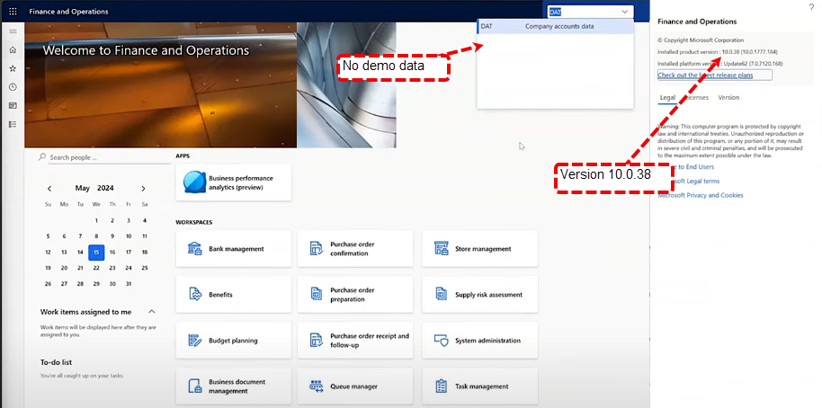

Target Environment- is a PPAC environment:
the Target Environment has no demo data and is in version 10.0.38

Source Environment is LCS managed
The source environment is in version 10.039
And in Lcs you will find the name of the linked PPAC environment

1- Find the Source ennvironment in PPAC
2- Make sure the regions are same in the source and target
3- In the source environment click on the copy button

4- it will open a dialog on the right with title "Copy enviroment"
a- Select Everything
b- Select the target environment to overwrite
c- Click on Copy
d- and on Confirm

5 this process will ru through and will put the environment in Admin mode.
After that, when the copy is done, it will complete validation.